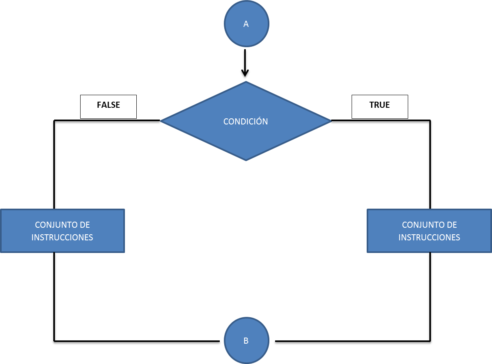
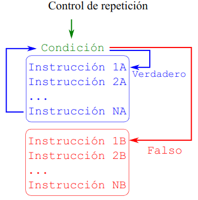
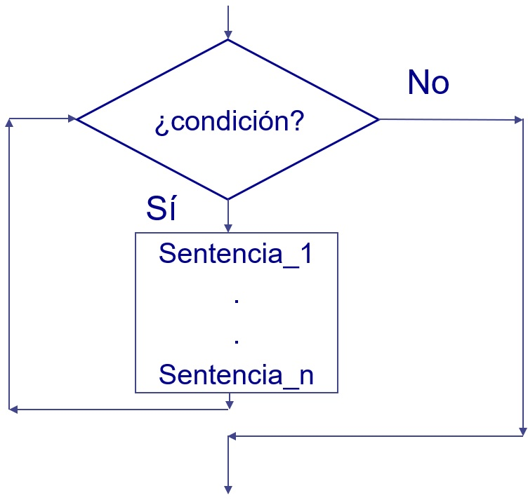

Hola, Christian!Funciones y Bucles de Control
Introducción
En esta lección, aprenderemos sobre funciones y estructuras de control en Python. Las funciones son bloques de código que se pueden reutilizar en diferentes partes de un programa, permitiendo que el código sea más modular y fácil de mantener. Las estructuras de control son bloques de código que permiten controlar el flujo de ejecución de un programa, como bucles y declaraciones condicionales. Son dos conceptos fundamentales en programación que nos permiten escribir código más eficiente y legible.
Tabulación en Python
Antes de proceder, hay que explicar la tabulación en Python. A diferencia de otros lenguajes de programación que utilizan llaves {} para delimitar bloques de código, Python utiliza la tabulación para indicar la estructura del código. Esto significa que los bloques de código se definen por la cantidad de espacios o tabulaciones al principio de una línea. Es importante mantener la consistencia en la tabulación para que el código funcione correctamente. Por ejemplo, en una función, el cuerpo de la función debe estar tabulado con 4 espacios o una tabulación.
Si no se mantiene la consistencia en la tabulación, Python generará un error de indentación. Por ejemplo, si el cuerpo de la función no está tabulado correctamente, se generará un error de sintaxis.
Funciones
Las funciones son bloques de código que se pueden reutilizar en diferentes partes de un programa, permitiendo que el código sea más modular y fácil de mantener. En Python, las funciones se definen con la palabra clave def, seguida del nombre de la función y una lista de parámetros entre paréntesis. El cuerpo de la función se define con una tabulación (4 espacios) y puede contener cualquier número de instrucciones.
Primero elaboremos una función sencilla, la cual se llamará saludo y recibirá un parámetro nombre:
En nuestra función usamos una f-string para imprimir un saludo personalizado, las f-strings son una forma de formatear cadenas de texto en Python, permitiendo la interpolación de variables dentro de una cadena. Para definir una f-string, se coloca una f antes de las comillas de apertura y se encierra la variable entre llaves {}. Es decir, le estamos diciendo a Python que reemplace {nombre} con el valor de la variable nombre que en este caso es 'Christian'.
Las funciones pueden devolver un valor usando la palabra clave return. Por ejemplo, la siguiente función cuadrado recibe un número x y devuelve su cuadrado:
Como habrás notado en los ejemplos anteriores, hemos usado el nombre de la función seguido de paréntesis para llamarla. En el caso de la función saludo, hemos pasado un argumento nombre entre los paréntesis. En el caso de la función cuadrado, hemos pasado el número 5. Estos argumentos se llaman parámetros y son los valores que la función espera recibir para realizar su tarea.
Hay varias formas de poner los argumentos en una función:
- Argumentos posicionales: Los argumentos se pasan en el orden en que se definen en la función.
- Argumentos con nombre: Los argumentos se pasan con el nombre del parámetro al que corresponden.
- Argumentos por defecto: Los argumentos tienen un valor por defecto que se usa si no se proporciona un valor.
- Argumentos variables: Los argumentos se pasan como una lista o un diccionario.
En los ejemplos hemos utilizado argumentos posicionales. A continuación, veremos cómo usar argumentos con nombre:
En este caso, hemos pasado los argumentos num1 y num2 con sus nombres correspondientes y les hemos asignado valores. Esto nos permite pasar los argumentos en cualquier orden, siempre y cuando especifiquemos el nombre del parámetro al que corresponden.
Ahora veamos cómo usar argumentos por defecto:
Código
4
8En este caso, la función potencia tiene un argumento exponente con un valor por defecto de 2. Si no se proporciona un valor para exponente, se usará el valor por defecto. Si se proporciona un valor, se usará ese valor en su lugar.
Funciones Lambda
Las funciones lambda son funciones anónimas que se pueden definir en una sola línea. Se definen con la palabra clave lambda, seguida de una lista de parámetros y una expresión que se evalúa y devuelve el resultado. Por ejemplo, la siguiente función lambda calcula el cuadrado de un número:
Las funciones lambda son útiles cuando se necesita una función simple y no es necesario definirla con una declaración def.
Ahora definamos una función lambda un poco más compleja para sumar dos números:
Paquetes y Módulos
En Python, las funciones se pueden organizar en módulos y paquetes para facilitar la reutilización y la organización del código. Un módulo es un archivo que contiene definiciones y declaraciones de Python, como funciones, clases y variables. Un paquete es una colección de módulos organizados en un directorio. Es decir, que un paquete es una carpeta que contiene archivos de python (módulos) que contienen funciones, clases y variables que puedes utilizar en tu programa.
Hay paqueterias y modulos muy útiles que se pueden importar en Python, por ejemplo, la paquetería math que contiene funciones matemáticas comunes, como sqrt para calcular la raíz cuadrada de un número. Para importar un módulo o una función de un módulo, se utiliza la palabra clave import seguida del nombre del módulo.
Una vez que se ha importado un módulo, se puede acceder a sus funciones y variables utilizando la notación de punto. Por ejemplo, para calcular la raíz cuadrada de un número, se puede utilizar la función sqrt del módulo math.
También es posible importar funciones específicas de un módulo utilizando la palabra clave from. Por ejemplo, para importar solo la función sqrt del módulo math, se puede hacer lo siguiente:
Muchas veces las paqueterias tienen nombres muy largos, por lo que se pueden importar con un alias utilizando la palabra clave as, las paqueterias más comunes en python tienen alias ya acordados en la comunidad, por ejemplo, pandas una paquetería muy utilizada para el análisis de datos se importa con el alias pd.
De esta forma, se puede acceder a las funciones y variables de la paquetería pandas utilizando el alias pd.
Existe un gran número de paqueterías y módulos disponibles en Python que proporcionan funcionalidades adicionales para tareas específicas, como el análisis de datos, la visualización, el aprendizaje automático, etc. Estas paqueterías pueden ser muy útiles para acelerar el desarrollo de aplicaciones y realizar tareas complejas de manera eficiente.
No todas las paqueterias vienen preinstaladas con Python, por lo que es necesario instalarlas con un administrador de paquetes, el más común es pip. Para instalar una paquetería con pip, se utiliza el siguiente comando en la terminal:
O si se usa jupyter notebook o jupyter lab, se puede instalar una paquetería con el comando !pip install nombre_paqueteria.
Cada paqueteria tiene su propia documentación, por lo que es recomendable revisarla para conocer todas las funciones y características que ofrece.
Legibilidad y Documentación de Funciones
Es importante que las funciones sean fáciles de leer y entender. Para ello, es recomendable seguir las siguientes buenas prácticas:
- Nombres descriptivos: Usa nombres descriptivos para las funciones y los parámetros.
- Comentarios: Añade comentarios para explicar lo que hace cada parte de la función.
- Documentación: Usa docstrings para documentar la función y proporcionar información sobre su propósito, los parámetros que espera y el valor que devuelve.
- Dividir en funciones más pequeñas: Si una función es demasiado larga o hace demasiadas cosas, divídela en funciones más pequeñas que realicen tareas específicas.
Veamos un ejemplo de una función bien documentada y legible:
En este ejemplo, hemos definido una función sine_wave que genera una señal de onda sinusoidal con los parámetros de amplitud, frecuencia, fase, duración y tasa de muestreo especificados. Hemos documentado la función con un docstring que explica los parámetros que espera y el valor que devuelve. También hemos definido una función plot_signal que traza la señal generada. Esta función es más legible y fácil de entender gracias a los comentarios y la documentación.
Un ejemplo profesional de documentación de funciones es la documentación de la paquetería numpy, que proporciona una descripción detallada de cada función, los parámetros que espera y el valor que devuelve. Puedes consultar la documentación de numpy en el siguiente enlace: https://numpy.org/doc/stable/.
Estrucutras de Control
Las estructuras de control son bloques de código que permiten controlar el flujo de ejecución de un programa. En Python, las estructuras de control más comunes son los bucles for y while, y las declaraciones if, elif y else.
Estrucutras de Control: if, elif y else
La declaración if se utiliza para ejecutar un bloque de código si una condición es verdadera. La declaración elif se utiliza para comprobar múltiples condiciones si la condición anterior es falsa. La declaración else se utiliza para ejecutar un bloque de código si ninguna de las condiciones anteriores es verdadera.

ifLa sintaxis de la declaración if en python es la siguiente:
if condicion:
# Código a ejecutar si la condición es verdadera
elif otra_condicion:
# Código a ejecutar si la condición anterior es falsa y esta condición es verdadera
else:
# Código a ejecutar si ninguna de las condiciones anteriores es verdaderaEjemplo
Si tenemos varias condiciones que queremos comprobar, podemos usar la declaración elif para comprobarlas en orden. A continuación, se muestra un ejemplo de una declaración if con elif que comprueba si un número es positivo, negativo o cero:
Estrucutras de Control: Bucles for
El bucle for se utiliza para iterar sobre una secuencia de elementos, como una lista, una tupla o un rango de números. La sintaxis de un bucle for en Python es la siguiente:

forSon muy útiles cuando se necesita realizar una tarea repetitiva, como recorrer una lista de elementos o realizar una operación en cada elemento de una secuencia, serán vitales para el análisis de datos.
Ejemplo
Veamos un ejemplo donde imprimimos una cuenta regresiva desde 10 hasta 1:
La función range genera una secuencia de números desde el primer argumento hasta el segundo argumento, con un paso especificado por el tercer argumento. En este caso, estamos generando una secuencia de números desde 10 hasta 1 con un paso de -1. Es muy común usar range en bucles for. Otra forma de usar range es con un solo argumento, que genera una secuencia de números desde 0 hasta el argumento especificado.
Como habras notado, la función range genera una secuencia de números desde 0 hasta 4, ya que el argumento especificado es 5, si cuentas los números, verás que son 5 números, si quieres hasta 5, debes poner 6.
En el siguiente tema abordaremos más los usos del ciclo for cuando trabajamos con listas y diccionarios o en general con objetos iterables.
Estrucutras de Control: Bucles while
El bucle while se utiliza para ejecutar un bloque de código mientras una condición sea verdadera. La sintaxis de un bucle while en Python es la siguiente:

whileLos bucles while son útiles cuando no se sabe cuántas veces se debe ejecutar un bloque de código y se necesita comprobar una condición en cada iteración.
ADVERTENCIA. Es importante tener cuidado al usar bucles
while, ya que si la condición nunca se vuelve falsa, el bucle se ejecutará indefinidamente, lo que puede provocar un bucle infinito y bloquear el programa.
Ejemplo
Ahora intentemos algo más complicado, crearemos una función que nos diga cuantas vecces se repite una letra dada en una cadena de texto:
Código
def contar_letra(cadena, letra):
contador = 0
i = 0
while i < len(cadena):
if cadena[i] == letra:
contador += 1
i += 1
return contador
# Primer verso y coro de "Army of One" de Coldplay
cadena = """
Been around the world, wonders to view
Been around the world looking for someone like you
Pyramids try, Babylon too
But the beautifulest treasures lie in the deepest blue
So I never say die, aim never untrue
I'm never so high as when I'm with you
And there isn't a fire that I wouldn't walk through
My army of one is gonna fight for you
"""
letra = 'a'
print(f'La letra "{letra}" se repite {contar_letra(cadena, letra)} veces en la cadena de texto.')La letra "a" se repite 14 veces en la cadena de texto.Hemos combinado el uso de un bucle while con una declaración if para contar cuántas veces se repite una letra en una cadena de texto. En general siempre podemos usar un bucle for en lugar de un while, pero en este caso, queríamos mostrar cómo se puede usar un bucle while para realizar la misma tarea.
Combinar funciones, bucles y estructuras de control es una de las formas más poderosas de programar en cualquier lenguaje, y Python no es la excepción.
Ejercicios
Escribe una función que tome dos números como argumentos y devuelva el mayor de los dos.
Escribe una función que te diga si un número es par o impar.
Crea una función que diga si una palabra es palíndroma o no.
Crea una función que diga si un año es bisiesto o no. ( PISTA: un año es bisiesto si es divisible entre \(4\), excepto los años que son divisibles entre \(100\) pero no entre \(400\)).
Escribe una función que cuente en reversa hasta 0 desde un número dado y si el número es divisible entre \(3\), imprime Fizz, si es divisible entre \(5\), imprime Buzz y si es divisible entre \(3\) y \(5\), imprime FizzBuzz. Por ejemplo, el número \(15\) debería imprimir FizzBuzz, el número \(9\) debería imprimir Fizz y el número \(10\) debería imprimir Buzz.
Manejando Bucles de Control
Hay ocasiones en las que necesitamos salir de un bucle antes de que se complete o saltar a la siguiente iteración sin ejecutar el resto del código. En Python, podemos hacer esto con las declaraciones break y continue.
Declaración break
La declaración break se utiliza para salir de un bucle antes de que se complete. Cuando se encuentra una declaración break, el bucle se detiene y la ejecución continúa con la siguiente instrucción después del bucle. La declaración break se puede utilizar en bucles for y while. Se suele utilizar para salir de un bucle cuando se cumple una condición específica utilizando una declaración if.
Supongamos que queremos encontrar el primer número divisible entre \(7\) y \(5\) en un rango de números del \(1\) al \(100\). Podemos usar un bucle for y la declaración break para salir del bucle cuando se encuentre el número deseado.
Código
1 no es divisible entre 7 y 5
2 no es divisible entre 7 y 5
3 no es divisible entre 7 y 5
4 no es divisible entre 7 y 5
5 no es divisible entre 7 y 5
6 no es divisible entre 7 y 5
7 no es divisible entre 7 y 5
8 no es divisible entre 7 y 5
9 no es divisible entre 7 y 5
10 no es divisible entre 7 y 5
11 no es divisible entre 7 y 5
12 no es divisible entre 7 y 5
13 no es divisible entre 7 y 5
14 no es divisible entre 7 y 5
15 no es divisible entre 7 y 5
16 no es divisible entre 7 y 5
17 no es divisible entre 7 y 5
18 no es divisible entre 7 y 5
19 no es divisible entre 7 y 5
20 no es divisible entre 7 y 5
21 no es divisible entre 7 y 5
22 no es divisible entre 7 y 5
23 no es divisible entre 7 y 5
24 no es divisible entre 7 y 5
25 no es divisible entre 7 y 5
26 no es divisible entre 7 y 5
27 no es divisible entre 7 y 5
28 no es divisible entre 7 y 5
29 no es divisible entre 7 y 5
30 no es divisible entre 7 y 5
31 no es divisible entre 7 y 5
32 no es divisible entre 7 y 5
33 no es divisible entre 7 y 5
34 no es divisible entre 7 y 5
El primer número divisible entre 7 y 5 es 35Podemos ver que el bucle se detiene en el número \(35\), que es el primer número divisible entre \(7\) y \(5\) en el rango de números del \(1\) al \(100\).
Declaración continue
La declaración continue se utiliza para saltar a la siguiente iteración de un bucle sin ejecutar el resto del código en el bloque de bucle. Se suele utilizar para omitir ciertas iteraciones de un bucle basándose en una condición.
Por ejemplo, supongamos que queremos imprimir todos los números del \(1\) al \(10\) excepto el número \(5\). Podemos usar un bucle for y la declaración continue para saltar la iteración cuando el número es \(5\).
Otra declaración que se puede usar en bucles es pass, que no hace nada y se utiliza como marcador de posición cuando no se necesita ejecutar ninguna instrucción en un bloque de código. Pero el resultado no es el mismo que continue, ya que pass no salta a la siguiente iteración, simplemente no hace nada.
En este caso, el número \(5\) se imprimirá, pero no se ejecutará ninguna instrucción cuando i == 5. Es una forma de evitar errores de sintaxis cuando se necesita un bloque de código vacío (por ejemplo, en una declaración if o una función que aún no se ha implementado).
Conclusiones
En el contexto del análisis y el modelado de datos, ¿cómo crees que las funciones y las estructuras de control pueden ser útiles? ¿Qué tipos de tareas o problemas crees que se pueden abordar de manera más eficiente con funciones y estructuras de control?
En la próxima lección, exploraremos cómo trabajar con listas, tuplas, conjuntos y diccionarios en Python, que son estructuras de datos fundamentales para el análisis de datos y la programación en general. ¡Nos vemos en la próxima lección!